helado con forma de fruta
Helados artesanales de Bogotá, moldeados uno a uno como fresas, moras, mangos y bananos y bañados en chocolate.
- Domicilios en Bogotá
- WhatsApp 324 483 8484
- También en Rappi
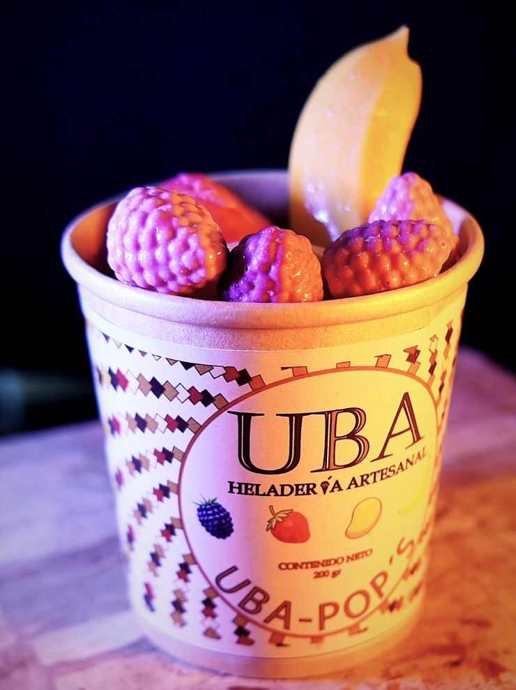
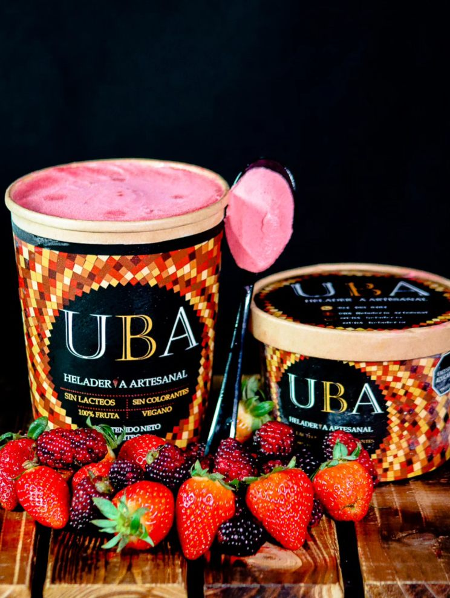
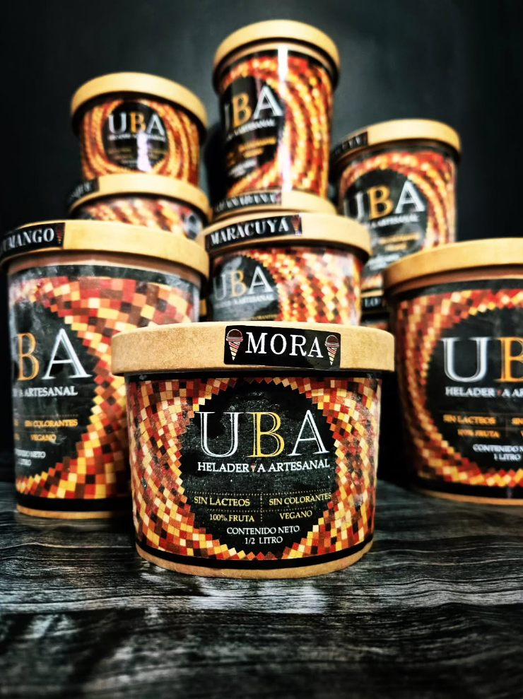
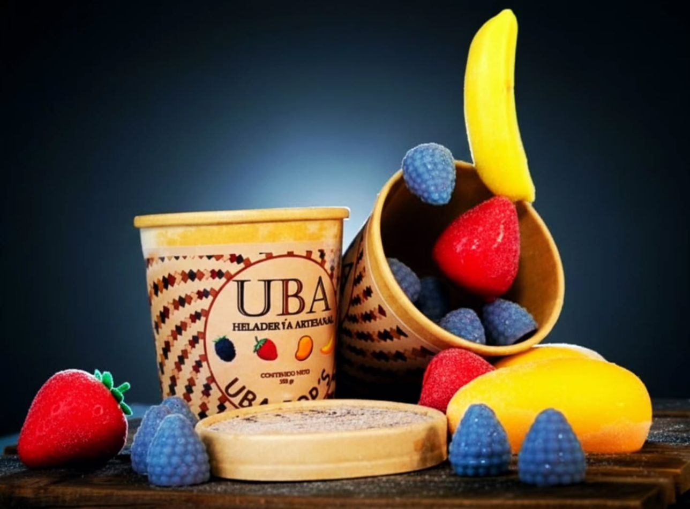
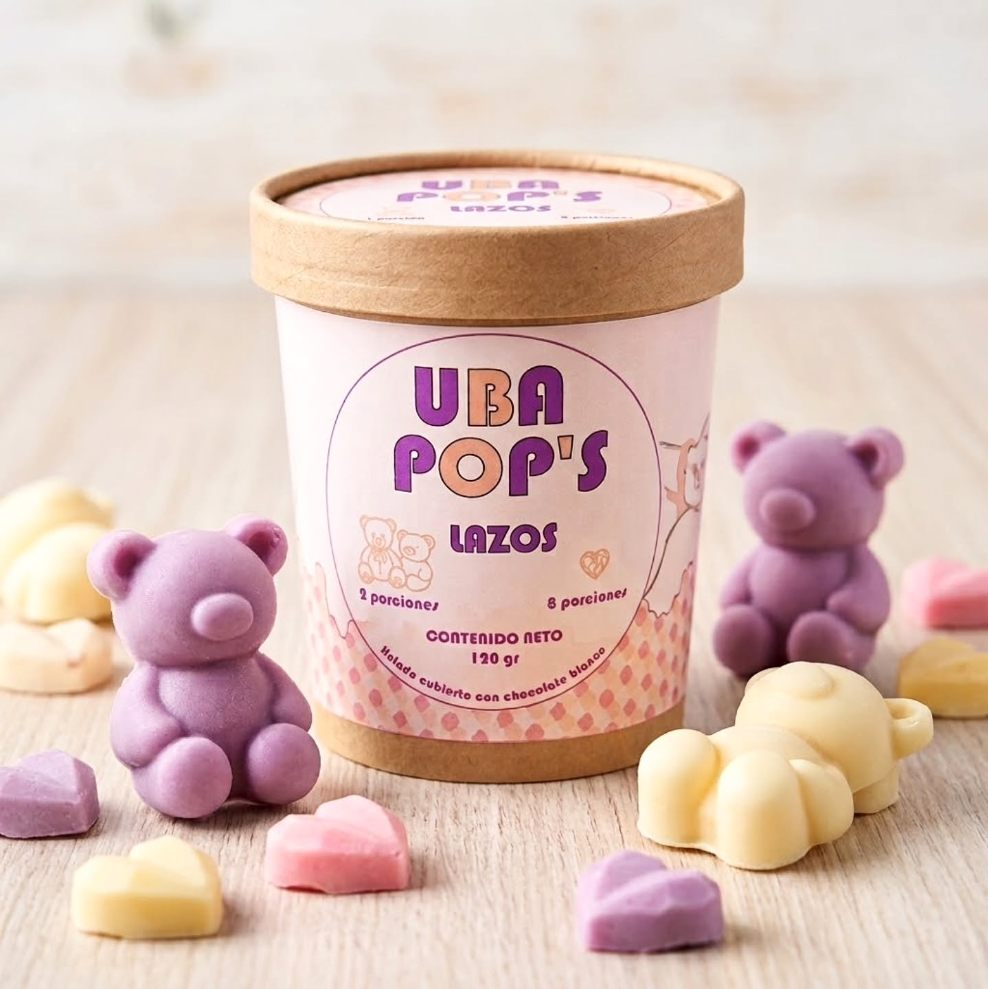
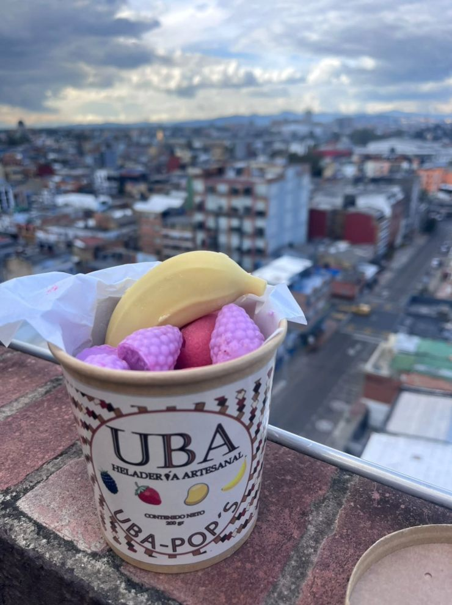
elige tu frutica
fresa
Helado cremoso de fresa vestido con una capa fina de chocolate. Casi siempre es la primera que desaparece del vaso.
arma tu vaso
Escoge hasta ocho fruticas, mézclalas como quieras y envíanos el pedido listo por WhatsApp.
- fresa 0
- mora 0
- mango 0
- banano 0
- lulo 0
Llevas 0 de 8 fruticas.
así nace una frutica
-
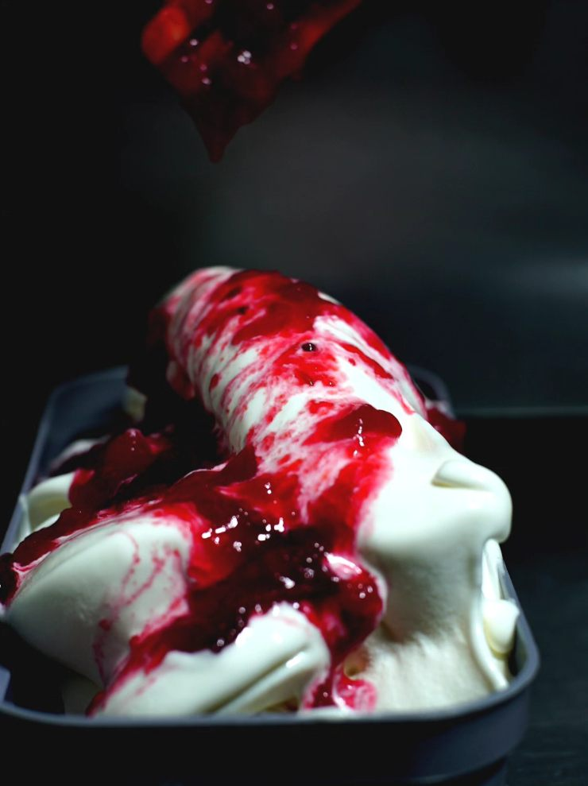
Se prepara la base
Helado cremoso hecho con fruta natural, sin colorantes ni conservantes.
-
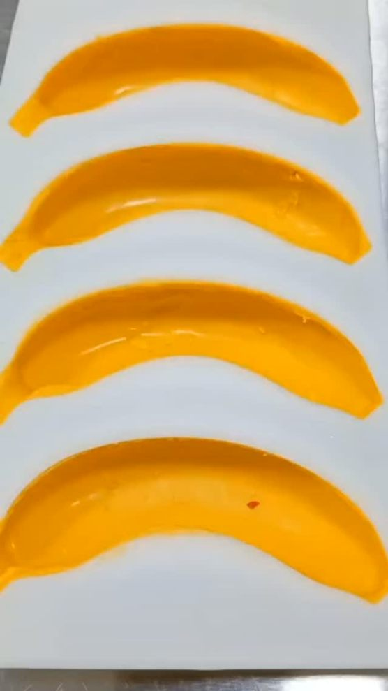
Se vierte en el molde
Cada frutica se llena a mano en su molde de silicona y se congela.
-
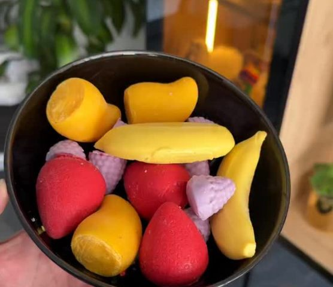
Se viste de chocolate
Al desmoldar recibe una capa fina de chocolate del color de su fruta.
-
Se sella en el vaso
Va al vaso kraft, se tapa y sale congelada rumbo a tu casa.
bogotá en vasito 13 fotos
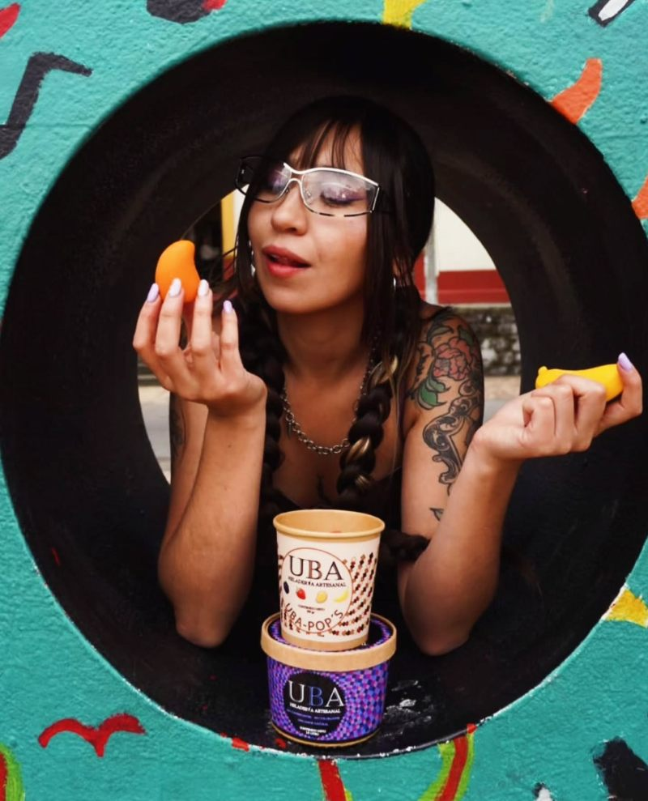
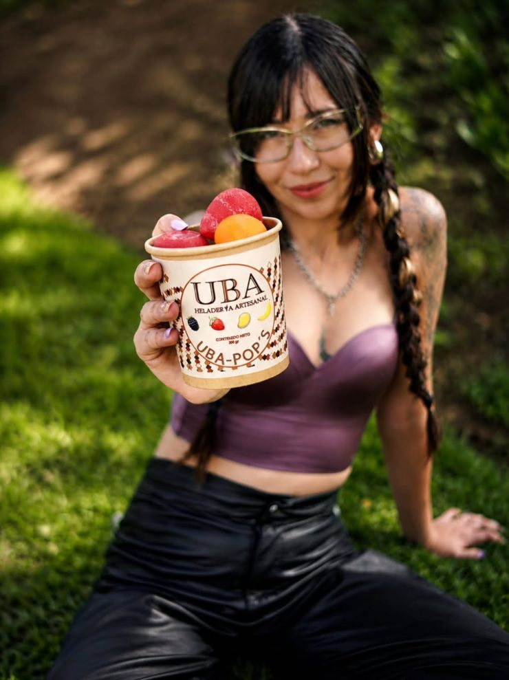
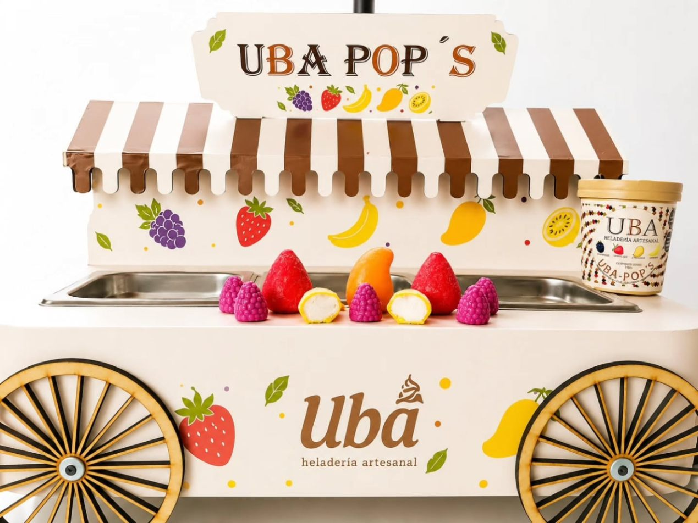
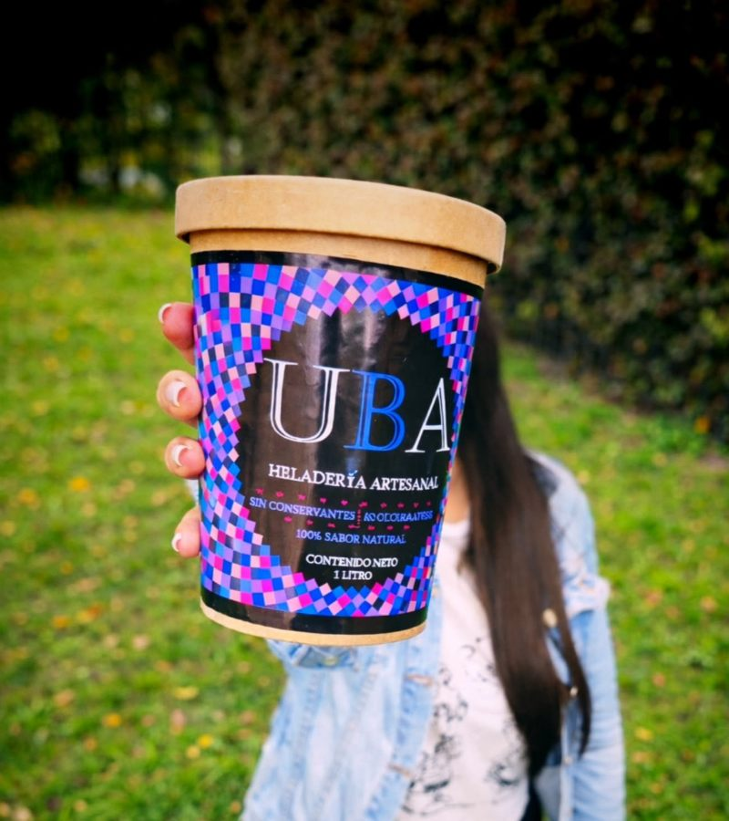
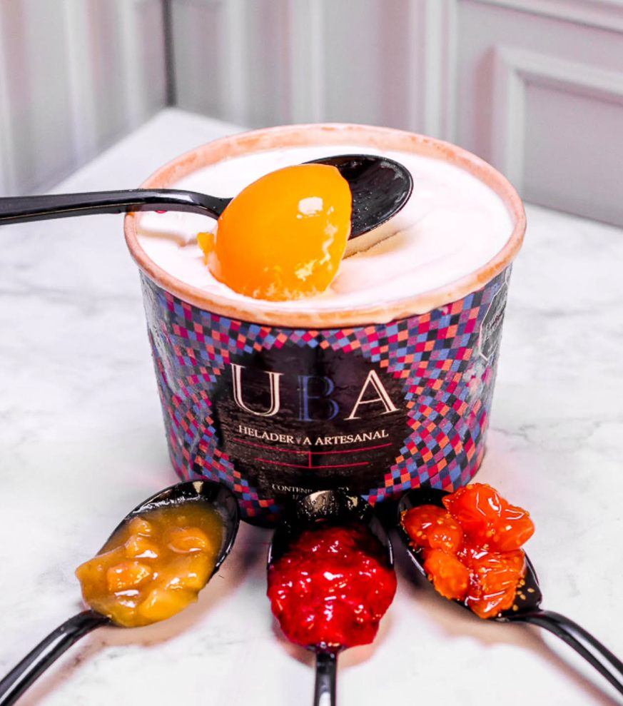
lo que dicen en redes
Creadores de Bogotá que probaron las fruticas y lo contaron en sus videos.
“Los famosos helados en forma de fruticas, únicos en Bogotá. Son una cosa sabrosa y obligatoria.”
“Los vi tanto en redes que no me podía quedar sin probarlos.”
“¡Qué cosa tan rica y divertida!”
pide tu vaso hoy
Escríbenos por WhatsApp, cuéntanos qué fruticas quieres y te lo llevamos a domicilio en Bogotá. También estamos en Rappi como UBA Heladería Artesanal.
¿Cumpleaños o evento? Pregunta por el carrito Uba Pop's.